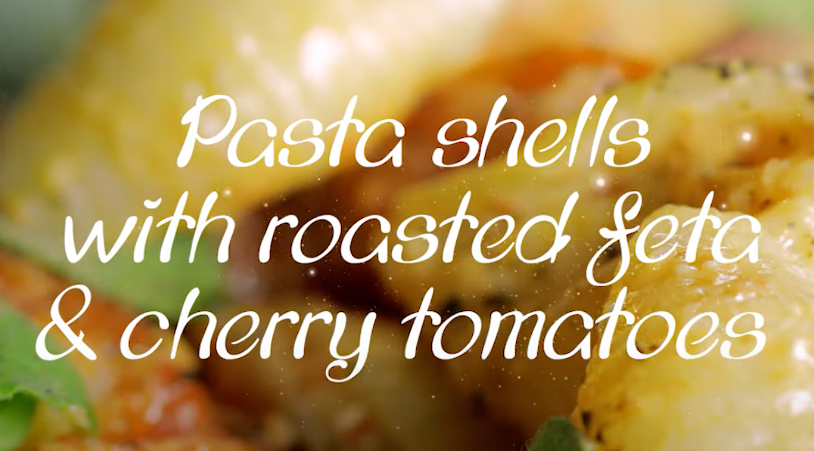

Home
Pasta Shells with Roasted Feta and Cherry Tomatoes

Description:
Simple, healthy, hearty and easy to make. Less than 35min, with prep time less than 10min!!!
Ingredients:
- 21 ounces cherry tomatos
- 1 sliced red onion
- 3/4 to 1 cup of olive rounds
- 1 tbsp granulated sugar
- 1 tbsp oregano
- olive oil
- salk and black pepper
- 200g Greek feta cheese (does not has to be Greek)
- chili flakes
- 1 pound of shell pasta
Steps:
- Preheat the oven to 400°F.
-
In a backing pan (make sure the height is enough to contain),
add cherry tomatoes, sliced onion, olives, sugar, oregano, olive oil, salt and pepper,
and mix well.
-
Make a well in the center and place the feta cheese and sprinkle with cilli flakes,
and bake for 30min.
- While waiting, cook the pasta in salted water.
- Remove from oven, use fork to break the tomatos, then add the cooked pasta.
- Drizzle some more olive oil, and give it a good stir, and make sure the pasta are coated with greek cheese.
- Once plated, drizzle more olive oil if you like, and sprinkle with oregano.